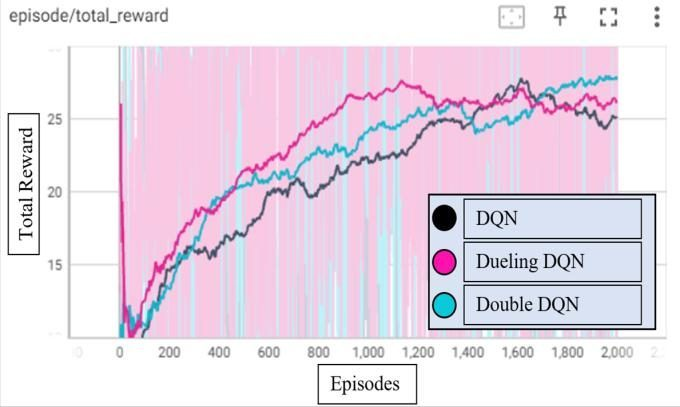
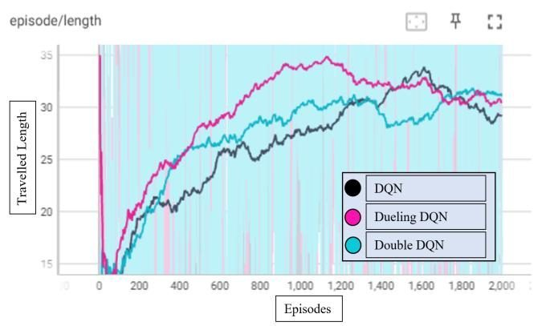

Controls & Data
Highway Decision-Making for Autonomous Vehicles with Deep RL
Three deep reinforcement learning agents trained to make lane-keeping and lane-changing decisions on a simulated highway.
- Category
- Controls & Data
- Tools
- Python · OpenAI Gym · DQN / DDQN / Dueling DQN
- Context
- Arizona State University · team project
Overview
DQN, Double DQN and Dueling DQN agents were trained for driving decisions in an OpenAI Gym highway environment. The team also debugged code and package version issues along the way.
Setup and method
- State: vehicle speed and relative positions; actions: acceleration and lane changes.
- Training metrics: total reward and distance traveled per episode over 2,000 episodes.
- Tensor operations and matrix manipulation for the network implementation.
- Compare the three algorithms on those same two metrics.
Results
All three agents settle at similar total reward after about 2,000 episodes, and Dueling DQN learns fastest early in training.
Figures


Next project: Helical Pipe Heater: Conjugate Heat Transfer →